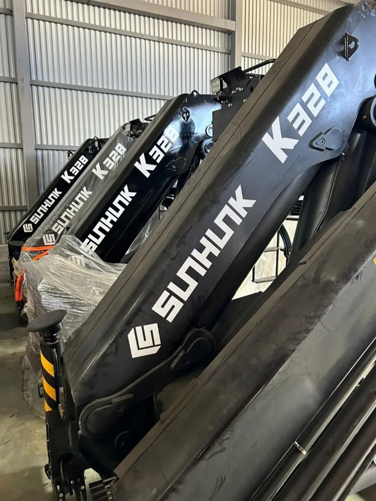

Remote control for a truck-mounted loader crane
A radio remote lets the operator choose a position with a clear view of the hook, load and landing point. This is especially useful when unloading behind a fence or alongside a building.

When a different viewpoint helps
A fixed control station keeps the operator at one point on the truck. A remote lets the operator move to a safe position allowed by the lift plan. When placing equipment close to a wall, for example, a side view makes the clearance easier to judge. Coordination with a signaller still depends on the lift and the visibility on site.

What to look for in a remote
Ask for a demonstration of the boom movements available from the handset and the warnings it can display. Some systems can also record operating data, such as slew angle or operation time. If the fleet uses those records to review a shift or train operators, check that the proposed system supports them.
Retrofitting an existing crane
A crane with mechanical levers may need actuators, an electronic module and integration with the existing controls. Give the installer the exact model and configuration. Include fitting, commissioning and operator training in the estimate. If the crane works on sites with restrictions on radio equipment, check their requirements before choosing the handset.